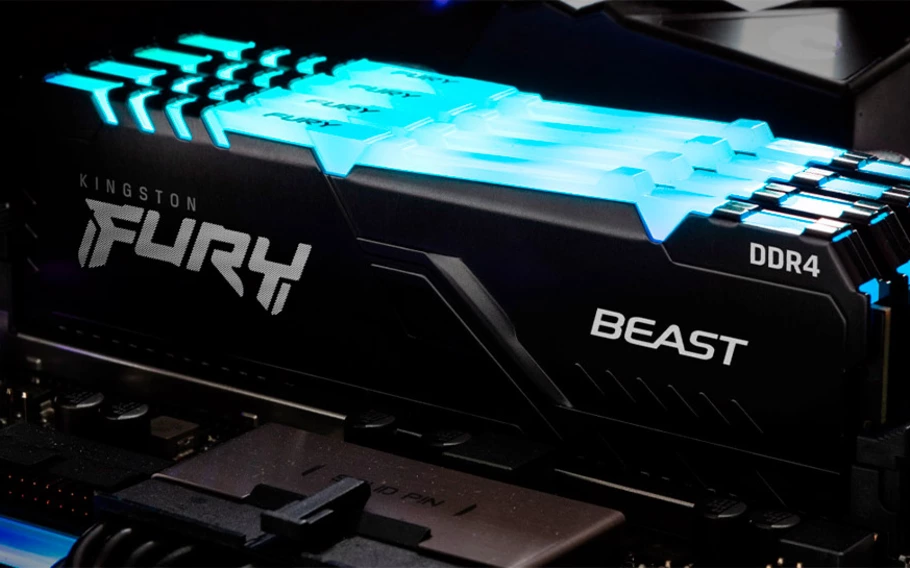

Como instalar uma memória RAM no computador

Atualizar as configurações do PC aumentando a quantidade de memória RAM do sistema é uma boa opção para os usuários que pretendem ganhar desempenho em suas máquinas. Realizar o processo é simples, no entanto, requer alguma atenção dos usuários, em especial daqueles que não são familiarizados com o assunto.
Este artigo pretende apresentar como executar o processo de substituição ou instalação de memórias RAM em um desktop. Abordaremos também pontos como suporte do sistema e placa-mãe, além de mostrar uma forma de conferir se a instalação foi feita de maneira correta.
O que é uma memória RAM?
Antes de iniciar o processo, cabe uma explicação rápida do que é uma memória RAM. Esse componente dos computadores são as memórias voláteis do sistema e servem como um local de armazenamento de informações para acesso rápido por parte do processador
RAM significa “Random Acess Memory”, isto é, Memória de Acesso Aleatório. Isso quer dizer que o PC consegue ler as informações armazenadas na memória em qualquer ordem, o que agiliza o processamento. Quanto mais capacidade nos pentes de memória, mais informações podem ser alocadas nelas.
Antes de comprar uma memória RAM, atenção!
O primeiro ponto de atenção do usuário diz respeito ao suporte da quantidade máxima de memória RAM que a versão do Windows oferece, mais especificamente para os usuários de sistemas operacionais anteriores ao Windows 11. Se for instalado um módulo superior ao limite suportado, o sistema pode não reconhecer a memória ou desprezar um dos pentes.
Caso o computador conte com um Windows de 32 bits (x86) haverá um limite máximo de 4 GB de memória RAM, Isso pode ser consultado indo no PC em Configurações > Sistema > Sobre. Se o Windows for de 64 bits (x64) o máximo pode variar entre 128 GB de RAM e 6 TB. Nesse caso, o limite máximo não deve ser uma questão.

Memórias DDR3, DDR4 e DDR5
Outra questão importante está ligada ao suporte que a placa-mãe do PC possui ao barramento de memória. Atualmente, os módulos mais populares são DDR3, DDR4 ou DDR5. O usuário precisa consultar o manual da placa-mãe ou do notebook em questão para saber a capacidade que a placa suporta e qual barramento suportado.
Importante: os suportes não são retrocompatíveis, ou seja, não é possível utilizar uma memória DDR3 em um slot DDR4 por exemplo, e vice-
Como escolher uma memória RAM
Primeiro, no caso de desktops, o ideal é utilizar um kit de memórias RAM em dual-channel, isto é, em dois pentes conectados aos slots indicados para isso, com o intuito de aproveitar o máximo possível da capacidade de cada uma das memórias.
Na arquitetura de dual-channel, há dois canais de comunicação entre o controlador de memória e a memória RAM. Com isso, o processador consegue acessar os arquivos da memória de forma mais rápida, agilizando o sistema.
Por isso, é sempre preferível usar dois pentes de 8 GB em dual-channel do que apenas um pente de 16 GB em single-channel, por exemplo, mesmo com a quantidade total de memória sendo igual. Até por isso, é mais comum que as fabricantes vendam seus produtos em kits com duas memórias.
Mas atenção: para executar um dual-channel correto, é necessário posicionar as memórias nos slots específicos descritos no manual da placa-mãe.
Alguns modelos de mainboard contam com cores diferentes nos slots, em caso de mais de dois slots na motherboard, para facilitar a identificação do dual-channel. Se for este o caso, basta ligar as memórias nos módulos de cores iguais.

Escolha memórias RAM iguais
Outra decisão importante é optar por memórias iguais, isto é, mesmo modelo, marca, frequência de atuação e capacidade. Isso pode contribuir para melhorar a performance de cada um dos módulos, além de aumentar a estabilidade do sistema.

Como instalar as memórias RAM
Depois de considerar todos os pontos, vamos para o passo a passo da instalação.
1. Retire todas as fontes de energia do computador
Remova a conexão de energia e segure o botão de ligar o computador por cinco segundos para retirar algum resto de eletricidade residual possivelmente presente no sistema.

2. Abra a tampa lateral do gabinete para ter acesso à placa-mãe

3. Consulte o manual da placa-mãe para saber os módulos certos para executar o dual-channel

4. Se já houver um módulo instalado, solte as presilhas de uma ou de ambas as laterais de cada um dos slots de memória (varia conforme a placa-mãe), onde as novas memórias serão conectadas e retire os pentes antigos. Caso não haja memórias instaladas, basta abrir as presilhas

5. Agora é o momento de inserir as memórias nos slots. Verifique a posição do corte entre os conectores para não forçar os pentes na posição errada e acabar danificando as memórias ou o slot


6. Empurre os módulos até que as presilhas retornem à posição original, fixando as memórias na placa-mãe

Confira o nível das memórias para assegurar que ambas estão bem encaixadas


Coloque a placa-mãe novamente no gabinete e conecte todos os cabos ao PC para ligá-lo

Ao final deste passo a passo, você adquiriu as habilidades necessárias para expandir a capacidade de armazenamento do seu computador, adicionando um novo HD SATA. A instalação bem-sucedida não apenas oferece espaço adicional para armazenamento de dados, mas também aprimora a eficiência e a organização do seu sistema. Agora, você pode desfrutar de mais espaço para seus arquivos, aplicativos e projetos sem comprometer o desempenho global do seu computador.
Lembrando sempre a importância de seguir os procedimentos de forma cuidadosa e atenta para evitar danos ao hardware.
Como verificar se as memórias RAM estão instaladas corretamente
Após a instalação, se o sistema ligar normalmente (o que já é um bom sinal), é possível conferir se os módulos de memória estão corretamente instalados. Para isso, nós recomendamos o uso do CPU-Z, um software gratuito e que se atualiza automaticamente.
O processo de download e instalação é simples. Basta acessar cpu-z para o download e prosseguir com os passos abaixo.


Com o CPU-Z instalado e rodando, o usuário pode conferir diversas informações do sistema atual do computador, em tempo real, inclusive o funcionamento das memórias RAM.
A aba “Memory” aponta dados como o tipo de memória instalado, quantidade total de GB dos kits, channel e frequências de atuação, e latências. Importante: o valor de frequência de operação real é multiplicado por dois, já que está operando em dual channel. No caso abaixo 1199.7 MHz x 2 = 2.398 (módulos de 2400 MHz, arredondando).

Já a aba “SPD” permite que sejam observados cada módulo de memória separadamente, incluindo apontando os slots sem memória instaladas, se houver na placa-mãe.